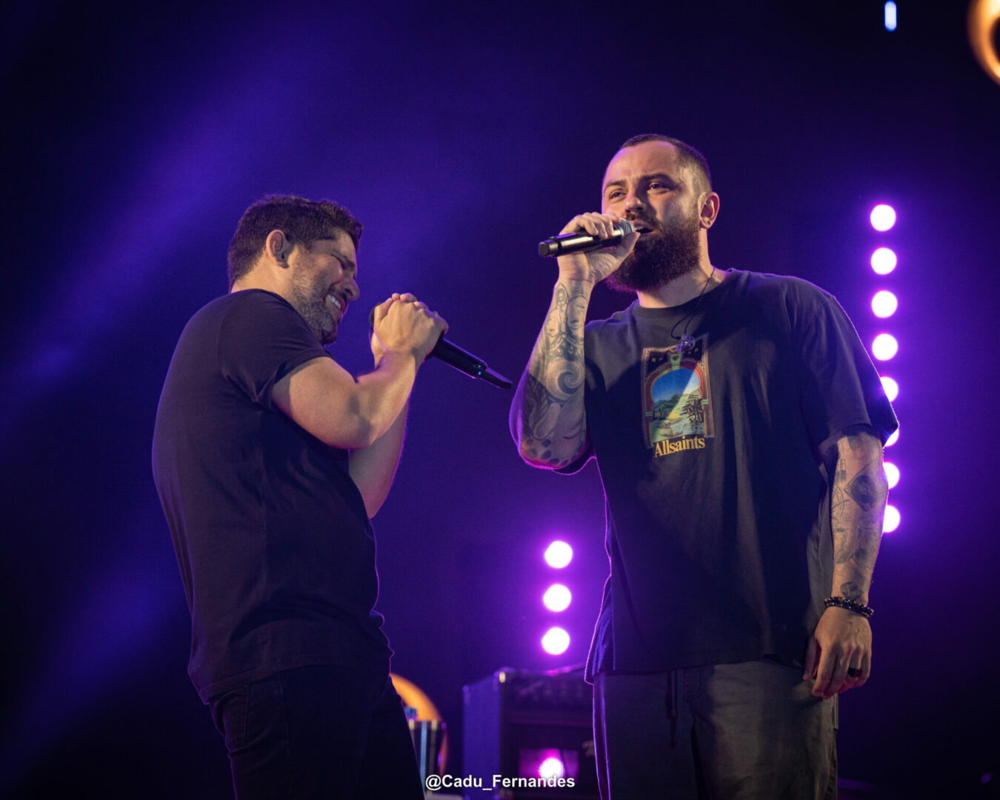

Somos Jorge & Mateus, uma dupla sertaneja que nasceu em Itumbiara, Goiás. Nossa história começou em 2005, quando decidimos unir nossas vozes e paixões pela música. Desde o início, sonhávamos em levar nossas canções para o maior número de pessoas possível — e graças ao carinho do público, isso se tornou realidade.
Nosso primeiro álbum ao vivo nos apresentou ao Brasil com músicas como Pode Chorar e De Tanto Te Querer. Desde então, seguimos construindo nossa carreira com muito amor, dedicação e respeito aos nossos fãs.
Acreditamos que a música tem o poder de conectar histórias, sentimentos e pessoas — e é isso que tentamos fazer em cada letra, em cada acorde. Ao longo dos anos, lançamos diversos sucessos como Amo Noite e Dia, Sosseguei, Logo Eu e Propaganda.
Também tivemos a alegria de levar nossa música para fora do Brasil, com shows nos Estados Unidos, Europa e outros lugares do mundo. Seguimos firmes nessa caminhada, sempre buscando evoluir, sem perder nossa essência. Somos eternamente gratos a cada pessoa que canta com a gente e faz parte da nossa história..
